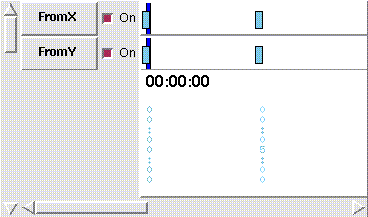

nviz Tutorial
nviz Tutorial
nviz Tutorial
nviz Tutorial
nviz is meant to be used as a tool for viewing data surfaces in three dimensions using GRASS on Silicon Graphics IRIS computers. It evolved from the earlier GRASS program SG3d. Users familiar with SG3d will find nviz similar but with a slightly different interface and many added features. New features include the ability to visualize multiple raster, vector, and site files at one time, and the addition of volume data among others. Hardware requirements are a Z-buffer and 24 bit graphics OR a 24 bit graphic emulator, such as that on the IRIS Indigo.
nviz uses raster files as "elevation" and also as attributes of the surfaces (such as color, transparency, etc.). While a true elevation data file used as elevation will produce the most realistic surfaces, users are encouraged to be creative in selecting other types of data to be represented by the vertical dimension. Most continuous (as opposed to discrete) data types will result in a visualization that makes sense. While developing the program, we used chemical concentrations as the elevation file with good visual results.
Emphasis during development was on ease and speed of viewer positioning and flexibility for using a wide range of data values and sizes. Since a wire grid can be drawn very quickly, such a grid is used to provide real-time viewer positioning capabilities. Similarly, a lighting "model" provides real-time feedback as the user adjusts lighting. Grid and polygon resolution control allows the user to further refine drawing speed and detail as needed. Continuous scaling of elevation values from 1.0ee-7 to 1.0ee+7 provides the ability to use various data types for the vertical dimension.
All nviz windows may be resized using the window manager's normal controls at any time. Text in the control panels is not scalable, however, so the text will disappear if the panel is sized too small.
Before starting the program, check your current GRASS region resolution and dimensions. The current resolution will determine the best resolution available in nviz. Large dimensions such as 1000 x 1000 rows and columns may cause the program to run slower. Try starting out with a smaller (i.e. 300 x 300 or less) region until you get more comfortable and experienced using the program.
The syntax for starting the program is:
nviz [-q] [elevation=name[,name,...]] [vector=name[,name,...]] [sites=name[,name,...]]
-q Quickstart. Skip over GRASS parsing and immediately start nviz.
elevation (optional) name of a GRASS raster file (or files) to use as elevation
vector (optional) name of a GRASS vector file (or files).
sites (optional) name of a GRASS sites list file (or files).
If the user types nviz on the command line without any arguments, the program will prompt the user for the arguments.
nviz starts up with one graphics window and one control panel window. The top third of the control panel window contains the Movement panel. Other panels may be selected from the Panel menu at the top of the window. When a panel is selected it appears in the control panel window. If the window is full, and there is no room for the new panel, one or more panels that are open on the control panel window will be closed to make room for the new panel. Panels can also be closed using the Close button that appears on each panel. The Movement panel, however is always visible. Each panel from the Panel menu will be described in more detail below.
Use the Movement panel to position the viewer over the data and to indicate viewing direction and perspective. As options in this panel are changed, a wire grid of the surface is redrawn (fast display mode) to immediately show the results of the changes. This panel also controls the actual drawing.
Occasionally, the bounds of the height slider are too narrow to position the camera as desired. In this case, the type-in entry next to the height slider may be used to set camera height directly. Typing in a value will also automatically adjust the slider bounds to account for the new maximum and minimum height. In general, most sliders with corresponding type-ins provide this functionality where it makes sense. Color sliders, for example, cannot be adjusted since color components must always be between 0.0 and 1.0.
The Lights panel contains adjustments and options to control the position, color and brightness of the lights and the reflectivity (shininess) of the surface. There are actually two lights: one dim white light remains directly above the surface at all times and serves as fill light. The main light, which the user controls, is a "local" light which is positioned much like the view position. When lights are being adjusted, a sphere appears on the surface and is continuously redrawn to show the effects of lighting changes. The lighting adjustments do not affect the appearance of the surface until it is redrawn. Neither light is directional; light is emitted equally in all directions.
 Lights Panel
Lights Panel
Use Surface panel options to manage surfaces to be drawn. The top half of the panel contains options for drawing style. The bottom half is used to add and delete surfaces and change attributes on the current surface. After options are set, click on Surface in the Movement panel to see the results.
 Surface Panel
Surface Panel
The rest of the buttons on this panel control attributes of the current surface. The current value of that attribute appears to the right of the attribute button. Clicking on an attribute button pops up a Change Attribute window (see below) which allows the selection of a new map or constant for that attribute.
Use Vector panel options to manage vectors to be drawn. After options are set, click on Vectors in the Movement panel to see the results.
New: Load a new vector file. This button pops up a File Browser window (see below) which allows the selection of a new vector file.
Delete: Delete current vector file.
Current: displays name of currently selected vector file. Pressing the left mouse button over the name causes a menu of all available vector files to appear. A new current vector can be selected from this menu.
Line Width: Width (in pixels) to draw vector lines.
Color: Use a Select Color popup (see below) select color used to for drawing current vector file.
Display on surfaces: A list of toggle buttons for each available surface. Current vector will be drawn on each of the surfaces whose button is activated.
Use Site panel options to manage sites to be drawn. After options are set, click on Sites in the Movement panel to see the results.
New: Load a new site file. This button pops up a File Browserwindow (see below) which allows the selection of a new site file.
Delete: Delete current site file.
Current: displays name of currently selected site file. Pressing the left mouse button over the name causes a menu of all available site files to appear. A new current site can be selected from this menu.
Site Size: Select size of site markers using slider or type in a value in text entry box.
Line Width: Width (in pixels) to draw site lines.
use X: Use an X to mark site locations.
use sphere: Use an sphere to mark site locations.
use diamond: Use an diamond to mark site locations.
3D Sites: Use third field of sites as z value for marker position. (When selected file is a 3d site file.)
color: Use a Select Color popup (see below) select color used to for drawing current site file.
Display on surfaces: A list of toggle buttons for each available surface. Current site will be drawn on each of the surfaces whose button is activated.
Use the Color panel to set the background color on the display screen.
 Color Panel
Color Panel
Background: Use a Select Color popup (see below) to select color used to for background color. Button color is currently selected background color.
Use the Cutting Planes panel to manage cutting planes which may be positioned to slice through surfaces.
Current: Number of currently active cutting plane.
Clicking on name pops up a menu from which a new current plane may be selected.
X, Y, Z: Position of current cutting plane (offset from center). Plane may be moved with position box and height slider immediately above. Height (Z value) is only applicable if tilt is non-zero.
Radio buttons T, B, BL, GR, N control color of visible plane between two or more surfaces.
T: Color is the same as the color of top surface.
B: Color is the same as the color of the bottom surface.
BL: Color is blended from top & bottom surface colors.
GR: Color is grey.
N: Plane is not visible.
Reset: Resets to default values.
All Off: Turns off all cutting planes.
Rotate: Rotate around center North-South axis. (side to side)
Tilt: Rotate around axis in plane parallel to xy plane (front to back). If tilt is nonzero, plane surface is not visible.
Use the Animation panel to create simple fly-bys of surfaces.
step, run, Key Frames: The Frames slider may be thought of as a time line representing the path. When a path has been loaded, clicking on run will move the viewer down the path, redrawing the wire frame surface at each path step. The user may cancel a running animation at any time by clicking on the stop button. The Key Frames slider shows the progression of the animation. Use the step arrows to step forward or backward one frame at a time, or move the Key Frames slider to the desired point in the animation. The number to the right of the step arrows is the frame number being displayed.
total frames: The value in this type-in box is the total number of frames in the animation. When a vector file is first loaded, the number of points in the file (up to 1000) will be the number of frames. Typically, to produce smooth animations, the user should use a vector file with 10 - 50 points, then change total frames to 100 or more, depending on the length of the animation desired. Requesting an excessive number of frames (i.e., 500,000) may cause memory problems.
show path: Toggling this button ON will cause the path to be drawn each time a new frame is drawn. The color and thickness of the path line may be changed using adjustments on the Vectors pop up panel. Showing the path can be useful while previewing and adjusting the path.
show vect: Toggling this button ON will cause vectors to be drawn each time a new frame is drawn, if a vector file has been loaded. (see also Vect...).
spline, linear, tension: These controls affect the interpolation method used when the value of total frames is different than the number of points in the original vector file used as the path. The points from the vector file are always used as control points from which the positioning information for the total number of requested frames is derived. If spline interpolation is selected, the user may adjust spline tension (how much slack there is in the path) using the tension slider. Toggling show path ON prior to adjusting tension allows the user to judge how much tension to use for a smoother path.
run and save images: Prompts user in the GRASS window for a prefix to be used to name a series of rgb format image files, one for each frame. The animation is then run from the beginning, with each frame being fully rendered using the current display type and resolution (see Control panel). If show vect is toggled ON, the vector file is also drawn, then the finished frame is written to an rgb file. If files already exist with the same name, they are overwritten. You may cancel run and save images at any time by selecting stop This entire process may take several hours of computer time for a 100 frame animation of a complex surface, but requires no further intervention from the user. The finished rendered animation files can be played back using SGI's movie program if it is a very short animation or you can capture the images on video (Also see Img Dump).
The What's Here panel operates like the GRASS program d.what.rast, you use the mouse to mark spots on the surface that you would like more information about. After clicking on the surface, data prints to the text box in the panel. First, the name of the surface clicked on is printed then the geographical coordinates. Next, elevation is bi-linearly interpolated from the current polygon resolution and this is printed (setting the resolution to 1 will produce the most accurate elevation). xy distance from previous and xyz distance from previous are straight line distances, whereas distance along surface and distance along exag surface are computed as the length of a path draped across the surface. Each time you select a point, a marker is drawn on the surface at the point selected with a line connecting it to the previous point. To stop selecting points toggle the What's here? button.
 What's Here Panel
What's Here Panel
Separate places a separating line at current text position.
Clear clears text window.
The Mkdspf panel provides facilities for creating display files (dspf) of isosurfaces from volume data (grid3 files).
 Mkdspf Panel
Mkdspf Panel
Input File: Enter name of grid3 file from which to create isosurfaces.
Output File: Name of display file produced. Should have .dspf extension.
Color File: Another grid3 file from which to find color values for isosurfaces.
Lighting Model: Choose one of flat or gradient . Flat shading is somewhat faster in computation and display, but gradient allows gouraud shading for isosurfaces with nicer display results.
Threshold type: Current must be one of Complete, Range, or Individual. Click on name of current selection to pop up list from which new threshold type can be selected. Panel changes depending on Threshold type selected.
Individual:Type in individual threshold values. List of selected values will appear in Iso Levels box. Use add and delete buttons to add or delete current value from list.
Complete: Type in Interval Size . Isosurfaces will be computed at Interval-size steps from minimum to maximum data values.
Range: Type in values for Min, Max and Num Levels and select one of the Interpolation toggles: linear logarithmic Quadratic Arbitrary. The number of levels specified will be computed within the range Min to Max, with interval computed according to Interpolation method chosen.
Image Dump: Dialog box prompts user for a name to be used for an IRIS rgb format image file, then writes the contents of the graphics window to that file. This is basically a screen dump of the portion of the screen defined by the boundaries of the graphics window, so if any panel windows or windows from other applications are partially covering the graphics window, they will appear in the saved image as well. To view the image files, you can use the SGI programs ipaste and imgview. SGI also provides many programs to convert rgb image files to other formats: toppm, totarga, tosun, tops, etc.
Quit: Quit the program.
Advanced Features
It is often desirable and convenient to save some configuration of Nviz for use in other applications. For example, each session of Nviz might require the same set of maps or other attributes. To allow persistence between sessions, Nviz provides tools for saving and loading the current "state" of the system. These tools are accessed using the Load State and Save State options under the File menu.
Save State records the current status of Nviz, including all current maps, color settings, camera viewpoint, and so on into a user designated file. This state file may then be reloaded at a later time and will restore the state of Nviz. Load State queries the user for a state file to load and modifies the state of Nviz according to the state file. Note that Load State does not erase the current state of Nviz when loading a new state. Instead, the current state is augmented according to the contents of the state file. Since this can sometimes cause unexpected results, it is best to either restart Nviz or manually reset the state of Nviz before loading a state file.
State files are particularly useful when creating scripts for animation (see scripting below). In particular, a predefined Nviz state can be loaded automatically into a script by turning on scripting and performing the activity of loading the new state.
The Key frame Animation panel is used to create more complex animations where careful control of camera motion is required. The key frame animator operates using the notion of channels. A channel describes some aspect of nviz which can be changed during an animation. Channels can be as specific as necessary, isolating single attributes of nviz, and can be turned on or off allowing segments of an animation to be arbitrarily detailed.
As mentioned above, what the key frame animator can control is determined by channels. Where the key frame animator creates changes is determined by key times. How the key frame animator creates changes is a more advanced topic and will be discussed later. For now, we concern ourselves with channels and key times.
A simple example of an attribute which is controlled by a channel is the camera. Although the entire camera could be controlled by a single channel, doing so would provide too gross a level of control. Instead, specific aspects of the camera are controlled by a set of eight channels: FromX, FromY, FromZ, DirX, DirY, DirZ, FOV, and TWIST. The From* channels control the position from which the camera is looking. The Dir* attributes control the direction in which the camera is looking. Lastly, the FOV and TWIST attributes control the "field-of-view" and "twist" of the camera. We will discuss how channel settings can be used to affect playback below.
For the most part, the key frame animator and the basic animator are very similar. One crucial difference is that the key frame animator uses key times to establish positions of key frames whereas the basic animator uses frame numbers. A key time represents a position in an animation in the form of mm:ss:ff where mm is minutes, ss is seconds, and ff is frames. Positioning key frames using key times is more precise and allows the user to more accurately design a timed animation. Moreover, key times do not depend on the current frame rate (even though you can specify a frame number as part of a key time). Key time frame numbers are automatically adjusted if the user modifies the frame rate. Thus, the user can experiment with different frame rates without having to move key frames.
Ultimately, the combination of key times and frame rate determines the overall length of the animation. If the length of the animation in key times is m minutes, s seconds and f frames with a frame rate of v, then the total length of the animation is (m*60 + s)*v + f frames.
Key frames are added in the key frame animator in the same fashion that they are added in the basic animator: move the view to the desired position and click the Add button. The position at which the key frame is added is determined by the New Key Time field. Normally, all channels are on. When a key frame is added, the set of channels are scanned and each channel which is on has its current status recorded. Channels which are off do not have their status recorded. Key frames are displayed on the white canvas area next to the list of channels. The key time for each key frame is given below the channel sliders. If a channel has an entry for a key frame, a light blue rectangle is created in the channel slider. The list of channels may be scrolled with the slider on the left. The bottom slider scrolls over the length of the animation. The following figure shows the key frame area with two key frames.

The key time display below the channel area is used to move key frames. To move a key frame, "drag" (i.e. hold the mouse button down while moving the mouse) the corresponding key time using the first mouse button. While you move the mouse, the key time will change to indicate its new value. When the value of the key time is correct, release the first mouse button to place the key frame.
The second mouse button is used to delete key frames. To delete a key frame, select the corresponding key time using the second mouse button, then click the Delete button. nviz will ask you to verify your decision, but once deleted, key frames are not recoverable. Note that you may delete more than one key frame at a time by selecting multiple key times with the second mouse button and pressing Delete.
The key frame animator provides facilities for viewing all parts of an animation as well as tools for running the animation in full rendering mode and saving the frames to disk. The primary mechanism for controlling position within an animation is the current key time slider. This slider is represented by a dark blue vertical bar in each channel slider, and a horizontal key time in large dark letters in the key time area. In the figure above, the current key time slider is positioned at 00:00:00.
The current key time slider may be controlled using either one of the blue bars in the channels area or its representation in the key time area. Within the channel area, simply clicking the first mouse button at a specified location moves the current key time slider to that position. Alternatively, you may drag the slider with the first mouse button. Within the key time area, you must drag the current key time slider to move it. This is done by holding down the first mouse button over the large dark key time and moving the mouse. Releasing the first mouse button sets the position. While dragging in either area, the key time display updates itself to show the current position.
The tape player controls at the top of the panel can be used to view a running animation. The direction of the arrows on four of the buttons indicate which direction the animation will play when they a pressed. Arrow buttons with a vertical bar will step a single frame whereas plain arrow buttons will play the animation until an endpoint is reached or the stop button is pressed (the square button). The animation is always played using the current frame rate setting. You can use the Frame rate button to change frame rate and experiment a bit.
The final step in developing an animation is usually saving the frame sequence to disk. In the key frame animator, the Run and Save Images button does just that. Pressing this button creates a Popup which queries the user for a base file name and a rendering style. The rendering style may either be wire frame (fastest) or full rendering (slowest). The base file name is used to store frames to disk in the form base_nameXXXXX.rgb where XXXXX is the frame number. Pressing Ok on the popup will start the rendering. You may stop the rendering by pressing the stop tape button as described above.
The channels nviz adds by default to the key frame animator are rather limited. However, the key frame animator is sophisticated enough to handle more general behavior. In particular, it is possible (with a little minor programming) for the user to add their own channels. The actual mechanism by which channels operate is a bit complex but necessary to understand in order to take advantage of all the features of the key frame animator. During playback, each channel determines a value for the attribute it controls. Thus the FOV channel is responsible for determining the Camera's "field-of-view" setting during animation playback. They way channels set values for attributes is by interpolating between key frame settings. The fact that not all channels may have entries for every key frame means that interpolation may be different for each channel. This is where the key frame animator gains its flexibility.
What follows is a brief discussion describing key framing in the key frame animator, and an explicit example of adding a channel. Using the example given here as a template, it should be fairly easy for users to add their own channels.
The purpose of this section is to provide instructions for adding animation capability to the key frame animator in nviz. The key frame animator records the state of various "channels" each time a key frame is added. Frames falling in between key frames are interpolated based on the channel entries at bounding key frames. The interpolation can either be static (that is, no interpolation) to handle changes in, for example, file names, colors, etc., or interpolation can be dynamic meaning a linear interpolation of floating point values. Key framing and channel addition is discussed below.
Key framing is an animation technique where we record the state of nviz at crucial moments (called key frames) and interpolate between these events to create individual animation frames. Key framing under nviz is based on channels. A channel specifies one aspect of nviz which may be altered at each key frame. Nviz starts out with a default set of channels which govern camera position. The user is then free to add other channels as described below.
Separating the state of nviz into channels allows different aspects of nviz to have different animation characteristics. Each channel may be set either active or inactive at a specific key frame. If a channel is active then it specifies a change at that key frame. Otherwise, the state of the channel is interpolated between the two closest enclosing key frames. As an example, suppose we have six key frames as follows:
Camera X----------X----I-----X-----J----X----------X----K-----X
I J K
Cutplane0 X----I-----X-----J---------------X K
I J K
Keyframe 1 2 I 3 J 4 5 K 6
The X's specify where a channel is active. Thus, the camera is active at every key frame while cutplane0 is only active at key frames 2, 3 and 5. The columns of I's, J's and K's indicate the position of animation frames. Now, at frame I, both camera and cutplane0 attributes are interpolated from their associated entries in key frames 2 and 3. At frame J, however, camera attributes are interpolated from key frames 3 and 4, while cutplane0 attributes are interpolated from key frames 3 and 5. Finally, at frame K, camera attributes are interpolated from key frames 5 and 6, while no changes are made to cutplane0. Thus by changing what channels are active, we may specify different interpolation rates for different channels.
Channels may be added to the key frame animator by calling the function keyanimAddChannel. keyanimAddChannel requires four arguments:
The BASE name of the key frame animator panel is $Nv_(P_AREA).kanimator by default. Also, be sure to specify a one word, unique name for the channel so there is no danger of interfering with existing channels.
An entry list is used to describe to the animator a list of values that a channel will govern. An entry list is a list of pairs where each pair specifies an entry name and an interpolation type.
As an example, consider a channel called "cplane-0" (cutplane 0). There are six attributes we need to keep track of for the cplane-0 panel: the x, y, and z components of translation, the blend type, the rotation angle, and the tilt angle. This corresponds to the following entry list:
{{pos_x dynamic} {pos_y dynamic} {pos_z dynamic}
{blend_type static} {rot dynamic} {tilt dynamic}}
Note that blend type is interpolated statically because blend type is not a floating point value, but rather a text string (and it makes no sense to linearly interpolate a text string).
As mentioned earlier, the get function returns the current state of the channel it is associated with. keyanimAddChannel expects the get function to return a list in the same format as the entry list except that interpolation types will be replaced with actual values. Getting back to our cutplane example, we need to define a function which returns a translation positions, blend type, and rotation and tilt positions. One possible tcl/tk function would be:
proc cutplane0_get_entries {} {
global Nv_
# Assemble the entry list showing the current state of cutplane 0
set ret [list]
foreach i [list pos_x pos_y pos_z blend_type rot tilt] {
set val [list $i]
switch $i {
"pos_x" { lappend val [lindex [Ncutplane0 get_trans] 0] }
"pos_y" { lappend val [lindex [Ncutplane0 get_trans] 1] }
"pos_z" { lappend val [lindex [Ncutplane0 get_trans] 2] }
"blend_type" { lappend val $Nv_(CutPlaneFence) }
"rot" { lappend val [lindex [Ncutplane0 get_rot] 2] }
"tilt" { lappend val [lindex [Ncutplane0 get_rot] 1] }
}
lappend ret $val
}
return $ret
}
Here we run through the list of entries for the cplane-0 channel and make the appropriate library calls to get the status of cutplane 0. The list returned has exactly the same form as the entry list except that interpolation types are replaced by actual values.
The set function is required to take as argument a list of the form returned by the get function. That is, an entry list with interpolation types replaced by actual values. Note that the argument list may not contain all the entries for a channel. In particular, entries for statically interpolated channel attributes will only be included in this list at key frames. One possible tcl/tk set function for cplane-0 would be:
proc cutplane0_set_entries { elist } {
global Nv_
set cur_trans [Ncutplane0 get_trans]
set old_trans $cur_trans
set cur_rot [Ncutplane0 get_rot]
set old_rot $cur_rot
set cur_blend $Nv_(CutPlaneFence)
set old_blend $cur_blend
foreach i $elist {
switch [lindex $i 0] {
"pos_x" { set cur_trans [lreplace $cur_trans 0 0 [lindex $i 1]] }
"pos_y" { set cur_trans [lreplace $cur_trans 1 1 [lindex $i 1]] }
"pos_z" { set cur_trans [lreplace $cur_trans 2 2 [lindex $i 1]] }
"blend_type" { set cur_blend [lindex $i 1] }
"rot" { set cur_rot [lreplace $cur_rot 2 2 [lindex $i 1]] }
"tilt" { set cur_rot [lreplace $cur_rot 1 1 [lindex $i 1]] }
}
}
if {"$cur_trans" != "$old_trans"} then {
Ncutplane0 set_trans [lindex $cur_trans 0] [lindex $cur_trans 1] [lindex $cur_trans 2]
}
if {"$cur_rot" != "$old_rot"} then {
Ncutplane0 set_rot [lindex $cur_rot 0] [lindex $cur_rot 1] [lindex $cur_rot 2]
}
if {"$cur_blend" != "$old_blend"} then {
set Nv_(CutPlaneFence) $cur_blend
Nset_fence_color $cur_blend
}
}
The last task is to actually make the call which adds the channel. For the cut plane example above, we make the following call to keyanimAddChannel:
set entry_list [list [list pos_x dynamic] [list pos_y dynamic] [list pos_z dynamic]]
lappend entry_list [list blend_type static]
lappend entry_list [list rot dynamic] [list tilt dynamic]
keyanimAddChannel $Nv_(P_AREA).kanimator "cplane-0" $entry_list \
cutplane0_get_entries cutplane0_set_entries
The cutplane-0 implementation given above is the same as that used for the cplane-0 channel given in nviz.
Sometimes it is desirable to automatically generate arbitrarily complicated changes to Nviz when creating an animation. The tools presented so far allow the user to create camera movement as well as add custom animation channels (e.g. the cut plane channel) to the key frame animator. However, the user would be required to add several complex channels to the key frame animator to capture the most general behavior. The purpose of the scripting environment is to allow the user to develop a one-time script file which can handle arbitrarily complex changes to the Nviz environment. Script files are extremely application dependent and, in general, will not be usable with other applications. However, they are the most convenient mechanism for capturing specific behavior quickly.
Scripting is controlled by the commands provided in the scripting pulldown menu (see figure below). By default, when scripting has been activated every user event in Nviz is recorded and output to a script saved as a text file. This script file may be played back in Nviz by using the Play Script option in the menu. Thus, most scripts are simply a carbon copy of the user performing certain actions. Scripting can become more powerful, however, by adding loops around a sequence of script events, or by using higher-level tools. The more advanced features of scripting are described in the Script Tools section below. The next section is devoted to describing basic scripting. Be sure to read this section carefully as the discussion of advanced features assumes the knowledge of this material.
 Script Pulldown Menu
Script Pulldown Menu
Basic scripting entails designating a script file, turning scripting on and off, and sending commands directly to the script. Before doing anything with scripting it is necessary to designate a script file. This is done by selecting the Scriptfile option in the script pulldown menu. The user is queried for a file to use as the new script file. If the designated file already exists then scripting will overwrite the old contents of the file.
Once a script file has been selected, scripting is turned on and off by selecting the On radio button in the scripting menu. The status of this radio button indicates whether or not scripting is active. As soon as scripting becomes active, literally everything the user does is recorded in the script file. Since this can lead to extremely large script files, it is suggested that scripting be turned on only when the next few user events are critical to the script. When you are finished adding commands to the script, select Close Script to close the script file.
To make the script files somewhat more legible and useful, two additional commands are available in basic scripting: Add Script Line and Add Script Cmd. The difference between these two commands is subtle but important. We will delay a discussion of the differences between these two commands for now. For our purposes, the difference between these two commands is as follows: Add Script Line adds a command directly to the script being written and will not affect the state of Nviz; Add Script Cmd adds a command to the script which will affect the state of Nviz. A script in Nviz is really a Tcl script with a slightly specialized format. Hence, legal script commands are things like comments marked with the # character, expressions like set i [expr $i + 1], and so on. Add Script Line is intended to add commands which directly affect the Tcl code in the script. Thus comments can be added making scripts more readable, variables may be accessed, and conditionals may be inserted allowing the script to select different execution paths depending on script variables. Commands added by Add Script Cmd may also be Tcl commands. However, these commands are executed directly in the Nviz environment and affect the current state of Nviz directly (but do not affect the state of the script). Thus commands like Nsurf10001 set_att topo y90o.1, which will set the topology attribute of a particular surface to a particular file, are meaningful commands to add.
The combination of Add Script Line and Add Script Cmd provide the most general tools for controlling script files short of directly editing the text of a script. It is expected that these commands will rarely be used. However, Add Script Line in particular is useful for placing comments to separate distinct portions of a script and make the overall script file more readable.
The Script Tools menu selection pops up the script tools menu which provides higher level script manipulation facilities. It is possible to do everything a script tool does by using Add Script Line and Add Script Cmd described above. However, the script tools are much more convenient and should be used instead. Currently, there are three types of tool covering the five selections in the script tool popup. Open Loop and Close Loop allow iteration using a numeric loop variable. Open File Seq. Loop and Close File Seq. Loop allow iteration over a series of files. Finally, the File Sequence Tool allows very general iteration over a variety of attributes associated with surface, vector and site maps. Be sure that scripting has been turned on (by selecting On) before using a script tool. The File Sequence Tool does not necessarily require scripting to be on, but for now we assume scripting has been activated.
The simplest tool is the Open/Close Loop pair. This tool defines a loop variable given the name lpX where X is the current loop being defined (starting with 1). The loop variable is iterated over a numeric range as specified by the user. The user may add commands (using Add Script Line) which reference the loop variable. The most general functionality provided by this tool is the ability to repeat some script activity a specified number of times.
A simple Open/Close Loop is created as follows:
 Simple Loop Popup
Simple Loop Popup
Note that simple loops may be nested by repeating the above process from within a simple loop. Each additional loop uses the same naming scheme, thus the outer loop will be lp1, the first nested loop is lp2 and so on. Internally a stack of loop names is maintained so that selecting Close Loop closes the most recently opened loop.
Simple open/close loops work well when looping behavior is relatively simple. However, simple loops are restricted to iterating over numeric values. A common scenario is for some map object in the scene to display a sequence of map files. That is, we need to be able to iterate over lists of files. The Open/Close File Seq. Loop pair provide this functionality. This tool, when activated, forces any mapBrowser activities within the scope of the loop to use the current loop iteration value rather than the value entered by the user when the script is created. Creating a file loop is slightly awkward but follows these basic steps:
 File Sequence Loop Popup
File Sequence Loop Popup
Like simple loops, file sequence loops may be nested as well as mixed with simple loops (make sure that you use the appropriate "Close" button however!). File sequence loops use a naming scheme similar to simple loops. File sequence iteration values can be accessed using the variable lseqX where X starts at 1 for the first loop and increments by 2 for consecutive loops (thus the next loop is 3, then 5, and so on).
To help clarify how the file sequence loop value can automatically be used by map browser activities, consider the following explicit example:
Suppose we want the topology of a surface map to sequence over a list of files (for example, the four file sequence shown in the map browser image above). We can use the file sequence loop tool to do this as follows:
When the script event corresponding to changing topology (step 5 above) is replayed in Nviz, the current value of the file sequence loop is used instead of the value supplied during script creation. Thus, during each iteration of the loop the topology attribute is set to the current value of the file sequence loop.
Be aware that the file sequence loop affects all map browser activities within the scope of the loop. Thus any script events added within the scope of a loop which also require a map browser will have their value replaced during script playback with the current value of the file loop.
The final script tool, the File Sequence Tool, is the most complicated but also the most flexible. This tool is designed to allow iteration over several attributes of several maps in Nviz. Unlike the two previous tools, the File Sequence Tool is capable of automatically producing a stand-alone script file which can be played back within Nviz.
Creating a script using the File Sequence Tool consists of two major steps: creating a state file, and creating a file sequence. State files were discussed in the appropriate section above. For the purposes of scripting, the File Sequence Tool can use a state file as a basis for the script it creates. Usually, the user sets up Nviz in a configuration just prior to the beginning of file iteration and saves the state of Nviz. The script created by the File Sequence Tool can then load this state file automatically before performing file iteration. The example below should help clarify these activities. For now, let us take a detailed look at the File Sequence Tool control window.
The File Sequence Tool control window is activated by selecting File Sequence Tool from the script tools popup:
 File Sequence Tool Window
File Sequence Tool Window
The File Sequence Tool operates on the concept of fields. A field identifies some attribute of a surface, vector, or site map which will be modified during an animation. The lower area of the File Sequence Tool is used to display all the fields currently set. In the example above, a single field is defined which modifies the topography attribute of a surface in Nviz. The buttons under Fields: are used to manipulate the current list of fields. Pressing Add will create a new field. Pressing Delete will allow the user to delete one of the fields. The State: button is used to determine the state file which the current fields will use a basis for script creation.
Before we discuss how to add fields, it is important to understand what types of fields may be added and how they may be changed. As mentioned before, a field identifies some attribute of a surface, vector or site map that we wish to change during each frame of an animation. For surfaces, we can modify the attributes topography, color, mask, transparency, shininess, and emission. For vectors and sites, we can only modify the current file. Furthermore, there are at least three simple ways we can change a field inbetween frames: we can load a new file in the place of the current file; we can unset the field so that it has no value; and we can leave the field unchanged. The File Sequence Tool supports all of the attributes we have listed plus the three simplest ways of changing these attributes inbetween frames.
Adding a field is a two step process: the user must decide which attribute of which surface, vector or site to modify; and the user must specify the list of changes to the selected attribute. Pressing the Add button creates the following popup:
 Add Button Popup
Add Button PopupField Type: refers to the type of map object this field will modify. Valid selections are Surface, Vector or Site. Field Attribute: refers to what attribute of the given type the new field will modify. For surfaces, valid selections are Topography, Color, Mask, Transparency, Shininess, and Emission. For vectors or sites, the only valid selections is File. Set From: refers to a surface, vector or site file in the current session of Nviz which will be used as the placeholder for changes in the new field. When a script is created, the Set From map object has the specified attribute changed according to the new field. Thus, the Set From map object should also be stored in the state file used by this file sequence.
After selecting an appropriate type, attribute and source map object, clicking Accept creates the file browser popup:
 Field File List Popup
Field File List PopupNormally, the file browser will have no selected files. However, for the sake of illustration we have already selected a few files in the image above. The MAPSETS and FILES lists operate just as in the Open/Close File Seq. Loop tool above. When a file is selected, its name is copied to the file list on the far right. File names may be entered explicitly in the type-in field on the top. The list of files on the far right indicates the sequence of changes the current field will undergo when a script is created. Recall that the File Sequence Tool supports three mechanisms for changing a field between frames: load a new file, unset the field, or leave the field alone. Selecting a file from the FILES list corresponds to loading a new file inbetween frames. By pressing the Blank button, the field is directed to unset the field for the next frame. This is indicated by storing -- blank -- as the next file in the file list. By pressing the Previous button, the field is directed to make no changes to the field and use the setting for the previous frame. This is indicated by storing (NO CHANGE) *** where *** is the previous entry in the file list.
For example, in the image above the file list changes can be described as follows:
The Remove button removes the selected file entry from the file list. The Done button is used to indicate that you are finished creating the file sequence for the current field. Clicking Cancel will backup to the Add Button Popup. Clicking Cancel on the Add Button Popup will cancel the creation of a new field.
The file sequence for a particular field may be changed even after it has been added to the field list. Each field in the File Sequence Tool Window contains a button which indicates the type of map object this field modifies (see the image above). Clicking this button pops up the file browser as above except that the list of files is initialized to the current file list for the selected field.
A particular configuration of fields can be saved for later editing by using the Load Fields... and Save Fields... options under the Options: heading. Save Fields... will save all of the current field configurations plus the name of the associated state file for later user. Conversely, Load Fields... will load a configuration of fields. Note that, in order to edit a group of fields in a different Nviz session, it will be necessary to re-load the state of Nviz that existed when the original fields were created. This is necessary so that the map objects which the original fields referenced will be present in the system if these fields are changed.
Once the user has created all the necessary fields for a particular script, it is possible to create a playable script file. There are two ways script information can be created: script information can be written to a script currently being created, or a separate, stand-alone script can be created. In either case, the script code created will only create the changes indicated by the given fields over the given number of frames. Extra code, such as code necessary for rendering and saving images after each frame, must be added separately. Since adding image saving code is a frequent activity, a comment is added to the code produced by the File Sequence Tool to aid the user in determining where to add code.
Clicking Add To Script will add code to the current active script which will invoke the changes indicated by the field files. Make sure that scripting has been turned on (see above) before using this option.
Clicking Build Script... will build a stand-alone script file. Stand-alone scripts first load the state file, then the field changes are executed as specified by the field descriptions. As usual, code must be added to the script to render images and save them to files.
The following step-by-step example should help clarify the creation of a script using the File Sequence Tool.
For this example, we will specify one surface with a vector and site file overlayed on top of it. At each frame, we will change the topography and color attributes of the surface, and the overlay files for the sites map. This animation will be a stand-alone animation. Recall that creating an animation with the File Seq. Tool requires two major steps: creating a state file and creating the field specifications. Since we will need all the appropriate maps loaded into Nviz before we can create the field specifications, we will go ahead and create the state file first:
At this point, we have established the state of Nviz before our animation will begin. State files provide a convenient encapsulation of the state of Nviz just prior to beginning animation. In fact, we may alter state files independently of the scripts which require them as long as we do not change the map objects required by each script. This allows users to modify such features as colors, positioning, line sizes, lighting, etc. without having to remake scripts.
The next step is to set up the frame changes for the animation. We will require three fields: one to modify surface topography, one to modify surface color, and one to modify the sites source file. For the sake of brevity, our animation will only be five frames long. We can create the field changes as follows:
At this point, the File Sequence Tool display should look something like the following:
 File Sequence Tool Example
File Sequence Tool ExampleIt may be wise to save your progress up to this point by clicking Save Fields... and choosing an appropriate file name. Saving the fields configuration is also a convenient way to use the same state file with different fields settings. For example, we could later modify our fields settings above by changing the list of files used in the frame sequence, adding new fields, etc.
Since we are generating a stand-alone script, press the Build Script... button and choose an appropriate file name for the new script. We will now edit the script so that it will render each frame after the field changes have been made. Load the script file into your favorite editor and do the following:
SendScriptLine "Nsurf_draw_all"
SendScriptLine "Nvect_draw_all"
SendScriptLine "Nsite_draw_all"
after 1000
The four lines we have added are instructions to Nviz to render the
all surface, vector and site files, then wait approximately one second
before going on to the next frame. The SendScriptLine command
is described in the next section. At this point, the script is purely
stand-alone and can be played from within nviz. To play the script
select Play Script from the Scripting menu and choose
the script file you saved above. After a brief bit of initialization,
the script will execute the field changes we specified above.
Hints
One nifty trick for navigating around Nviz is the "paste" feature supported in Tcl/Tk menus. Any pulldown menu may be pasted permanently on the screen by selecting the menu using the middle mouse button (as opposed to the first mouse button). The user may then click and drag the menu to another location on the screen. The menu will remain in its new position, regardless of the selections made from it, until the menu item which created the pulldown is selected using the first mouse button. For example, you can keep the "Panel" menu up for the duration of an Nviz session by selecting "Panel" from the main menu using the middle mouse button. Selecting "Panel" with the first mouse button moves the pasted menu back to its normal position and removes the menu after a selection has been made.
Lighting greatly enhances the level of detail that can be seen in the surface. For good lighting effects, position the light so that it creates a tilted half-moon on the sphere. Usually placing the light in the N-W corner when viewing from the south works well because of the way humans tend to interpret shading. To reveal very subtle gradual elevation changes, experiment with light placement and surface reflectivity. Keep resolution higher (3 or 4) while adjusting viewing position and lighting so that drawing time is fast. Then lower polygon resolution to 1 or 2 for the final rendering of the surface.
When rendering frames for animation, it is usually better to position lights so that they do not move with the viewer position (toggle Follow Viewpoint OFF).
What follows is an example of creating an animation to help you get started.
Using key frames is one of the easiest methods of animation it just takes some getting use to the Key Frame slider. For practice, just try making a circular path while always looking at the center of the data:
You should now have enough key frames marked to define a path, so try clicking on show path and then run (NOT run and save images). If nothing happens, clear all key frames and go back to step 1. Now let's complete the circular path:
Changing key frames: With the above key frames loaded, try changing a key frame as follows:
1........2..3..4
Run again, notice how movement speed was affected.
Because .rgb image files can end up taking a lot of disk space, users should be mindful of disk storage capacity when attempting to create an animation. Keeping animation files and image dumps in directories dedicated for such files helps in management. A single rgb image usually takes between 200K to 3M bytes of storage, depending upon size and complexity. If you use the SGI movie program to replay animations, each frame of the animation must have been saved to files of identical dimensions; so especially if you are creating an animation piecewise, at different sessions, it becomes important to maintain a consistent size for the graphics window. With the movie program and with other screen dump animating programs, there is a zoom option to enlarge the animation images at time of playback. So if you want the animation to fill your screen, you could set the width and height of the graphics window to half or a third their playback sizes when writing the image files, then use the zoom option (this will cause a loss of resolution though, since the zoom just replicates pixels). If you are making an animation to be recorded onto video tape, it may be necessary to set the width and height to specific dimensions.
New SGI programs released with IRIX 4.0.5, moviemaker and movieplayer, are also very useful for animations. Moviemaker allows you to create movie files from any number of rgb files at various frame rates. With movieplayer, much longer animations may be replayed than with movie since the frames are read directly from disk at run time rather than having to be loaded into memory.
nviz written by Bill Brown, Terry Baker, Mark Astley, and David Gerdes, U.S. Army Corps of Engineers Research Laboratories, Champaign, Illinois and UI GMS Laboratory, Urbana, IL.
This document written by Terry Baker, Spring 95, based on a document written by Bill Brown. Updated by Mark Astley 7/11/95.
 GMSL Modeling & Visualization Home Page
GMSL Modeling & Visualization Home Page